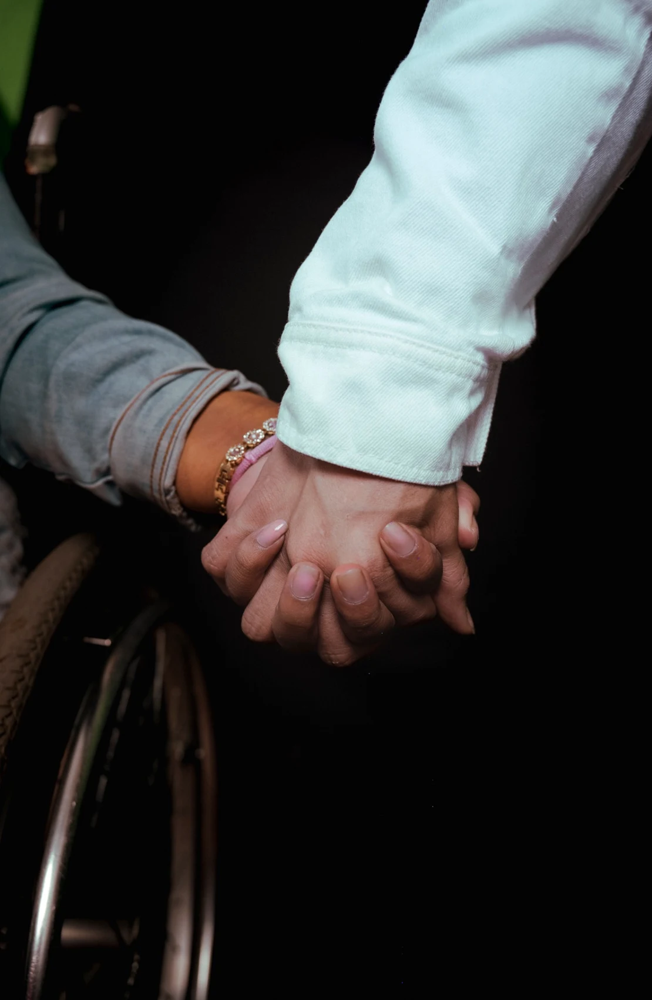

Serie fotográfica UPEC
Retratos sobre la vida universitaria, la expresión personal y los vínculos.
Retratos de estudio y miradas a la vida universitaria.

Retratos sobre la vida universitaria, la expresión personal y los vínculos.
Retratos de estudio con iluminación lateral y plumas de colores.